Fundamenten van het Internet
Geschiedenis
- Koude oorlog: behoefte aan robuust netwerk
- Gedecentraliseerd netwerk vs lineair netwerk (1957)
- Advanced Research Projects Agency (ARPA)
- Pakketjes met uniek nummer en adres
- 1968: Interface Message Processor (IMP) - Larry Roberts
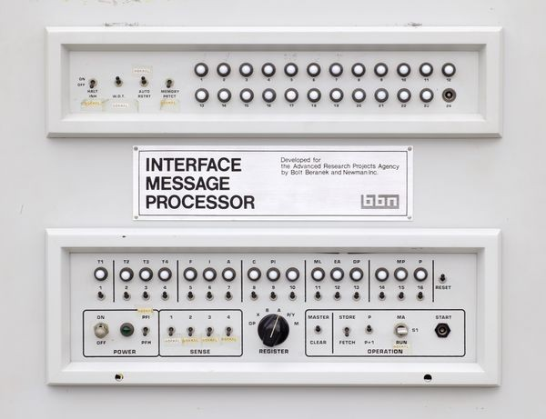
ARPAnet & TCP/IP
- Voorloper van het internet, gestart in 1966
- 1969: Established
- 1973: 37 netwerken
- 1974: ARPA & Stanford ontwikkelen TCP/IP-protocol
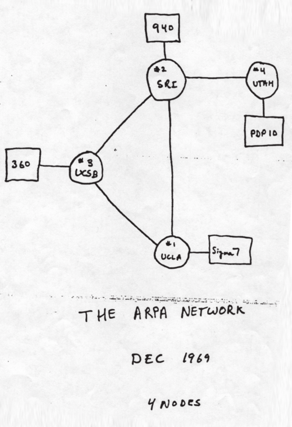
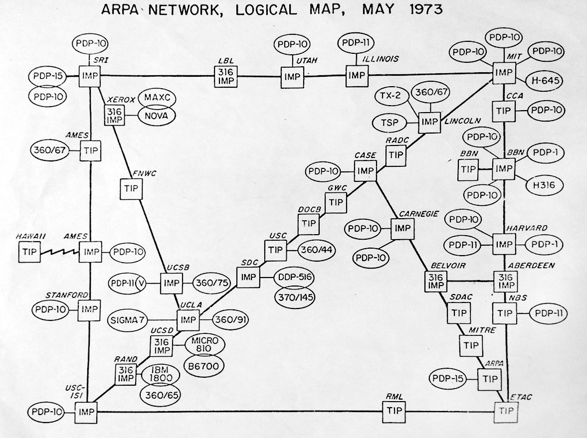

Groei & Ontwikkeling
-
Toepassingen:
- Inloggen op andere computers (telnet)
- Elektronische post (e-mail)
- Software verzenden/ontvangen (BBS, FTP)
- Nieuwsgroepen
-
Groei aantal hosts:
- 1983: 1.000 hosts
- 1986: 5.000 hosts
- 1987: 28.000 hosts
- 1988: 60.000 hosts
- 1989: 100.000 hosts
Uitbreiding van Netwerken
- Nieuwe netwerken (1974-1989): MFEnet, SPAN, Usenet, Bitnet, Csnet, Eunet, Nlnet, Belnet
- 1982: Start GSM-standaard (Groupe Spécial Mobile)
- 1983: ARPAnet schakelt volledig over op TCP/IP
- 1984: OSI-model (ISO)
- 1985: DNS in gebruik (.com, .org, ...)
- 1993: PDA (Apple Newton)
Ontstaan van het WWW
- 1989: Robert Cailliau (BE) & Tim Berners-Lee (UK) > hypertextsysteem voor CERN-documentatie
- 1990: Gestandaardiseerd hypertextsysteem, platformonafhankelijk, linken tussen bestanden
-
Projectnaam: WorldWideWeb
Programmeertaal: Objective-C
Webserver: NextCube
Doorbraak van het WWW
- 1991: Code omgezet naar C (open-source, platformonafhankelijk)
- 1992: Mosaic, eerste grafische webbrowser (NCSA)

Zoekmachines & Groei
- 1993: Eerste zoekmachines
- 1994: Yahoo (webgids) en Lycos (800.000 pagina's geïndexeerd)
- 1995: AltaVista, eerste doorzoekbare index van het hele web
- 1996: Ask Jeeves, vragen stellen in gewone taal
- 1997: Yandex (Rusland)
- 1998: Google, rangschikt pagina's met PageRank
- 2000: Baidu (China)
Zoekmachines tot vandaag
- 2008: DuckDuckGo, privacy-focused
- 2009: Bing (Microsoft) en Ecosia (plant bomen)
- 2021: Brave Search, eigen onafhankelijke index
- 2022: Perplexity, AI-antwoorden met bronvermelding
- 2023: Bing Chat, later Microsoft Copilot
- 2024: Google AI Overviews en ChatGPT Search
- 2025: Google AI Mode
- Google blijft marktleider met zo'n 90% van alle zoekopdrachten
Beveiliging & E-commerce
- 1994: SSL-protocol (Netscape), vandaag opgevolgd door TLS
- 1996: Eerste VoIP
- Online bankieren, webwinkels, Pizza Hut eerste pizza online
- 1999: Toename online bankieren, MP3, eerste sociale internetcommunity (ASL.to/Redbox)
Belangrijke Websites & Doorbraken
1995: Amazon
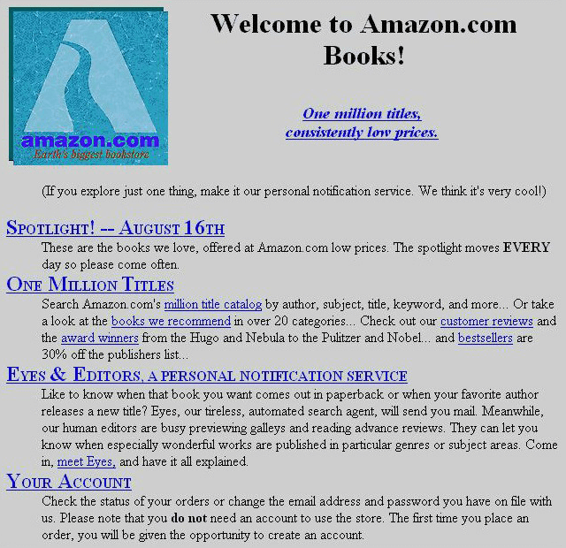
eBay
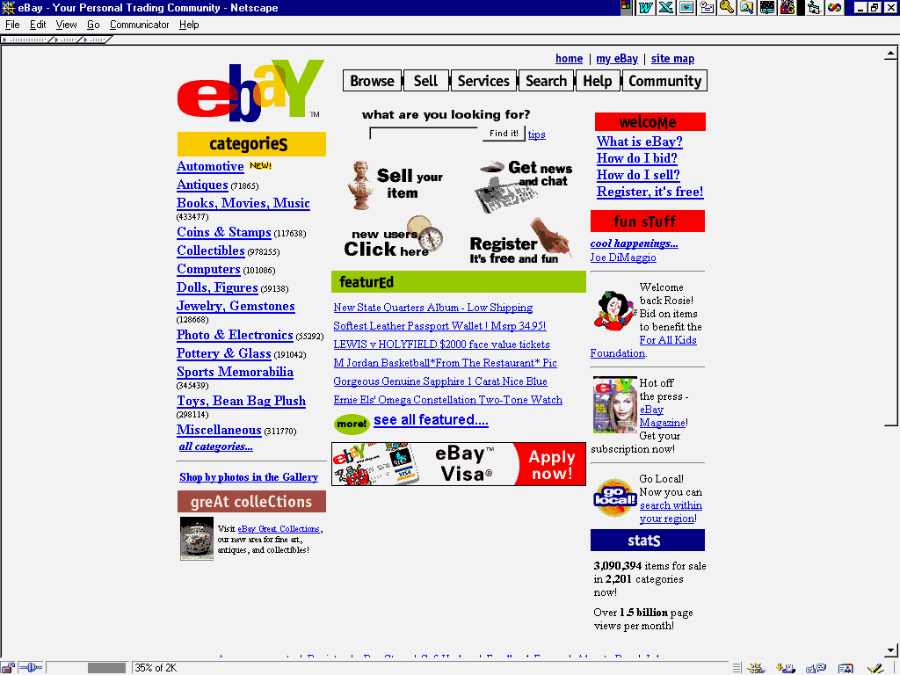
RealAudio
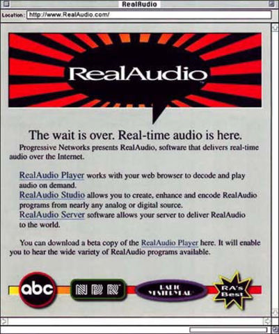
Internet Explorer
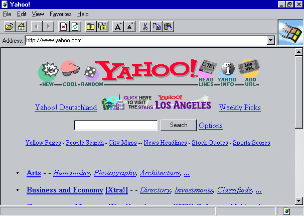
1997: SixDegrees.com
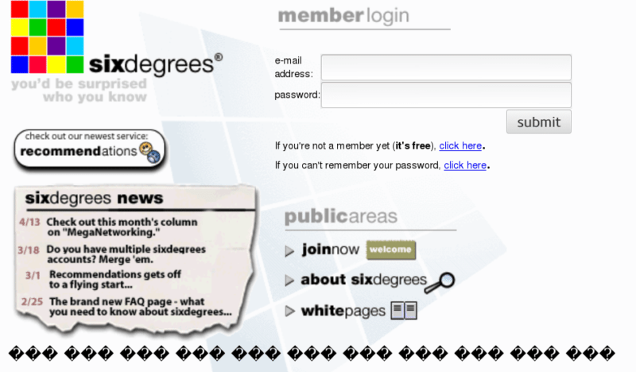
1998: Google

2000: Napster
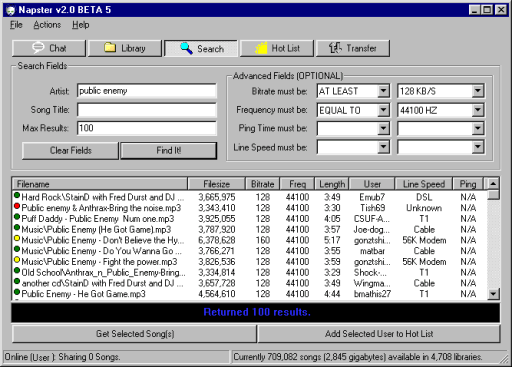
2001: Wikipedia
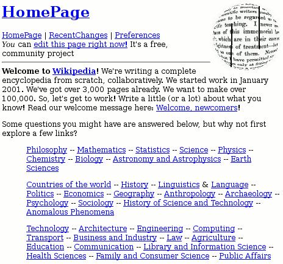
2003: Facemash, voorloper van Facebook (2004)
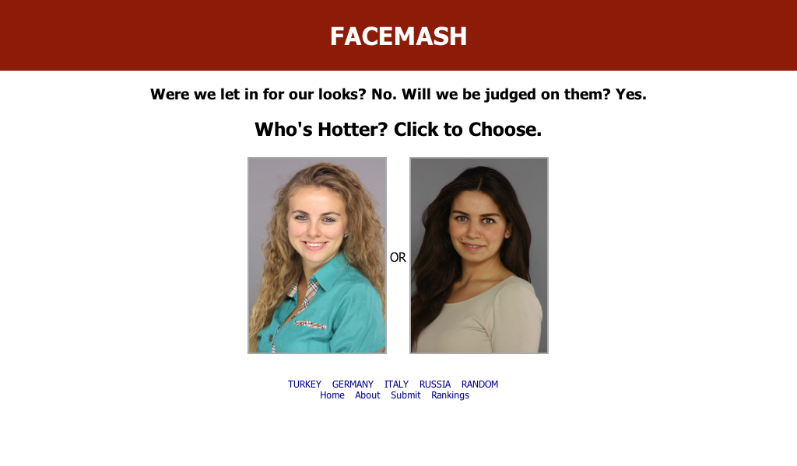
Verder verloop
- 2005: 8 miljard webpagina's geïndexeerd (Google)
- 2005: YouTube gelanceerd
- 2008: Doorbraak sociale netwerken: Netlog, Hyves, Facebook
- 2009: Doorbraak smartphones
- 2010: Doorbraak tablets
- 2014: 1 miljard websites online
Recente ontwikkelingen
- 2016: Informatieluchtbel en “Fake news”
- 2017: Deepfakes
- 2018: > 50% van de wereldbevolking actief op het internet
- 2020: COVID-19-pandemie versnelt digitale transformatie
- 2021: Cyberaanvallen en datalekken
- 2022: ChatGPT breekt door
- 2023: AI-gegenereerde content en chatbots
Het internet in 2026
- 2024: ca. 5,5 miljard mensen online (ITU)
- 2024: EU Digital Services Act & Digital Markets Act: regels voor grote platformen
- AI-antwoorden in zoekmachines en AI-agents die zelf surfen
- Satellietinternet (Starlink) tot in afgelegen gebieden
- HTTP/3 (QUIC) en groeiend gebruik van IPv6
World Wide Web (WWW)
- Informatieruimte voor documenten en web resources
- Unieke URI’s, hypertext links
- Webbrowsers en webapplicaties
Web 1.0
- Eerste ontwikkelfase (1989-2004)
- Read-only, content uit filesysteem
- Frames en tables
- Server Side Includes, CGI (Perl, Python, Ruby)
- Opvolgers: ColdFusion, PHP, ASP, JSP
Dynamische HTML & DOM
- DHTML: combinatie van HTML, CSS en client-side scripts
- Document Object Model (DOM) als structuur
- AJAX: dynamische content via asynchrone JS en XML
Web 2.0
- Participatief/Sociaal Web (2004-nu)
- User-generated content, rijke gebruikerservaring
- Social media, blogs, wikis, tagging, webapplicaties
- Gepersonaliseerde reclame: gebruiker als product
-
Functionaliteit delen:
- XML, RSS, Atom, JSON
- Web Services: SOAP, WSDL
- API’s: REST, GraphQL
- Extensies, evolutie webstandaarden, frameworks
- Cloud: IAAS, PAAS, SAAS
Web 3.0 vs Web3
- Web 3.0 (Tim Berners-Lee): semantisch web, data die machines begrijpen
- Web3: gedecentraliseerd ecosysteem op blockchain
- Gebruiker baas over eigen data
- Smart contracts, dApps, NFT's, DeFi
- Na de NFT-hype van 2021-2022 bleef vooral een niche over
- Wat wél doorbrak: AI, IoT, alomtegenwoordigheid (ubiquity)